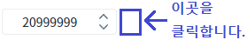
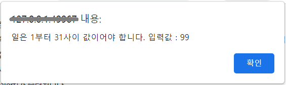
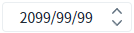

Spinner의 'useAlert' 속성을 설정하여, 잘못된 날짜가 입력되었을 때 경고창을 사용하지 않도록 설정한 예제입니다.
'useAlert' 속성은 'dataType' 속성이 'date'로 지정되고, 사용자가 입력 필드에 직접 값을 입력했을 때 동작하는 기능입니다. 사용자가 입력한 값이 유효한 날짜가 아닌 경우 경고 포커스가 벗어난는 시점에 메시지(alert)가 표시됩니다.
(기본) 경고창 사용
경고창 사용 안함
예제 영역 '(기본) 경고창 사용'에서 테스트합니다.1
STEP 1: 컴포넌트에 유효하지 않은 날짜를 입력합니다.
입력 필드에 '20999999'를 입력합니다.
Image 1.브라우저(Chrome) 실행 예시
2
STEP 2: 컴포넌트에서 포커스를 제거합니다.
키 Tab을 눌러 포커스를 제거하거나 마우스로 빈 여백을 클릭합니다.
Image 2.브라우저(Chrome) 실행 예시

3
STEP 3: 실행 결과를 확인합니다.
브라우저 메시지로 유효하지 않은 입력 값에 대한 안내 메시지가 출력됩니다.
메시지 예시) '일은 1부터 31사이 값이어야 합니다. 입력 값: 99'
메시지 창의 '확인'을 클릭하면 컴포넌트에 '2099/99/99'가 표시됩니다.
Image 3.브라우저(Chrome) 실행 예시 - alert

Image 4.브라우저(Chrome) 실행 예시

예제 영역 '경고창 사용 안함'에서 테스트합니다.1
STEP 1: 컴포넌트에 유효하지 않은 날짜를 입력합니다.
입력 필드에 '20999999'를 입력합니다.
Image 5.브라우저(Chrome) 실행 예시
2
STEP 2: 컴포넌트에서 포커스를 제거합니다.
키 Tab을 눌러 포커스를 제거하거나 마우스로 빈 여백을 클릭합니다.
Image 6.브라우저(Chrome) 실행 예시
3
STEP 3: 실행 결과를 확인합니다.
입력 값에 포맷이 적용되어 '2099/99/99'가 표시됩니다.
Image 7.브라우저(Chrome) 실행 예시
1
STEP 1: 속성을 설정합니다.
[필수] dataType="date"
데이터 타입을 날짜형으로 지정합니다.
[필수] useAlert="false"
유효성 안내 메시지를 'alert'하지 않습니다.
Example 1.Source
<!-- spinner의 소스 본문 예시 --> <w2:spinner dataType="date" useAlert="false" id="spi_exam2"> </w2:spinner>
dataType
useAlert